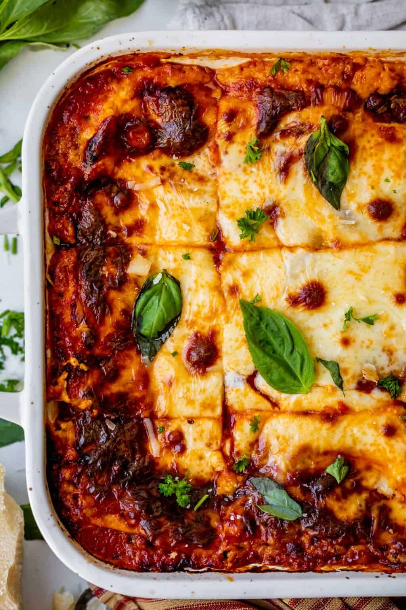

This homemade lasagna recipe is delicous and easy to make. It features layers of pasta, meat sauce, and cheese with a golden cheesy topping! Homemade Lasagna is a family favorite and a great way to feed a crowd. In this classic lasagna recipe, sheets of pasta are layered with a cheesy filling, a rich meaty tomato sauce, and more cheese and then baked until bubbly and browned. While there are a few steps, this lasagna recipe is relatively easy to make and has so much flavor.


Prep time: 30 minutes Cook time: 1 hour Serving: 12 servings
INGREDIENTS
- 12 lasagna noodles, uncooked
- 4 cups shredded mozzarella cheese, divided
- 1/2 cup shredded Parmesan cheese, divided
- 3/4 teaspoon salt
- 1/2 pound ground beef
- 1/2 pound sausage
- 1 onion, diced
- 2 cloves garlic, minced
- 36 ounces pasta sauce
- 2 tablespoons tomato paste
- 1 teaspoon Italian seasoning
- 2 cups ricotta cheese or cottage cheese
- 1/4 cup chopped fresh parsley
- 1 large egg, beaten
Tomato sauce:
Cheese mixture:
INSTRUCTIONS
- Preheat the oven to 350°F. Bring a large pot of salted water to a boil. Add the lasagna noodles and cook until al dente (firm) according to package directions. Drain, rinse under cold water, and set aside.
- Meanwhile, in a large skillet or Dutch oven, brown the beef, sausage, onion, and garlic over medium-high heat until no pink remains. Drain any fat.
- Stir in the pasta sauce, tomato paste, Italian seasoning, ½ teaspoon of salt, and ¼ teaspoon of black pepper. Simmer uncovered over medium heat for 5 minutes or until slightly thickened. Taste and season with additional salt if desired.
- In a separate medium bowl, combine 1 ½ cups mozzarella cheese, ¼ cup parmesan cheese, ricotta, parsley, egg, and ¼ teaspoon salt.
- Spread 1 cup of the meat sauce in a 9×13 pan or casserole dish. Top it with 3 lasagna noodles. Layer with ⅓ of the ricotta cheese mixture and 1 cup of meat sauce. Repeat twice more. Finish with 3 noodles topped with remaining sauce.
- Cover with foil and bake for 45 minutes.
- Remove the foil and sprinkle the top of the lasagna with the remaining 2 ½ cups mozzarella cheese and ¼ cup parmesan cheese. Bake uncovered for an additional 15 minutes or until browned and bubbly. Broil for 2-3 minutes if desired.
- Rest for at least 15 minutes before cutting.